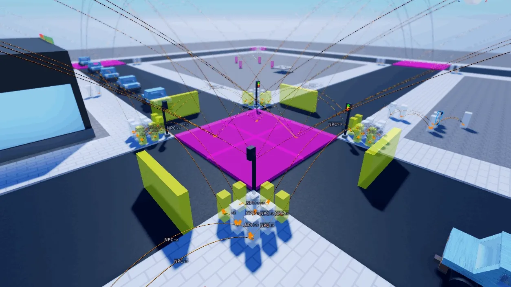

Best AI Website Creator
This document outlines the architecture of a multi-layered NPC AI system that simulates believable city life. Citizens follow 24-hour schedules, navigate a hand-authored waypoint graph using Dijkstra's algorithm, compete for shared resources (seats, queues, workstations), and respond to dynamic interruptions—all without centralized coordination.
The AI operates on three architectural layers, each solving a distinct problem.
Schedule Layer
Responsibility: Decides where the NPC should be based on the time of day.
Update Rate: Every 0.25 seconds.
Navigation Layer
Responsibility: Computes how to reach the destination using the shortest path on a waypoint graph.
Update Rate: On demand.
Activity Layer
Responsibility: Defines what the NPC does upon arrival, such as queueing, sitting, working, or wandering.
Update Rate: Event driven.
This separation means adding a new location, such as a library, requires only a new activity script and schedule entry. No changes to the navigation or scheduling core are needed.
Each NPC owns a 24 entry schedule table mapping each hour to a destination activity. The scheduler runs a continuous polling loop that checks the current in game hour against the NPC active state.
Key Design Decisions:
Polling Over Events
The schedule checks every 0.25 seconds rather than binding to time change events. This allows the system to handle time skips, pauses, and synchronization issues without missing triggers.
State Guard
The scheduler only issues a new goTo command if the NPC CurrentActivity differs from the scheduled destination. This prevents redundant path computations.
Activity Locking
When an NPC begins an activity, its state is set to DoingStuff. This prevents the scheduler from overriding the activity until it completes.
Refactored Pseudocode
-- Runs continuously on each NPC
local function scheduleLoop()
while true do
task.wait(0.25)
local currentHour = getInGameHour() -- 0-23
local scheduledDestination = npc.Schedule[currentHour]
-- Only act if the NPC isn't already doing the right thing
if npc.CurrentActivity ~= scheduledDestination then
goTo(scheduledDestination)
end
end
end
Example Schedule Data
npc.Schedule = {
["00.00"] = "EpsilonApt1", -- Sleeping at home
["07.00"] = "RandomWalk", -- Commuting
["08.00"] = "NicknationOffice", -- Work
["12.00"] = "Cafe", -- Lunch
["13.00"] = "NicknationOffice", -- Back to work
["18.00"] = "Gym", -- Exercise
["20.00"] = "Park", -- Leisure
["22.00"] = "EpsilonApt1", -- Home
}
Instead of relying on Roblox built in PathfindingService, which operates on navigation meshes and can be unpredictable in complex multi floor environments, the system uses a hand authored waypoint graph with a custom Dijkstra implementation.
Graph Construction
Waypoints are physical parts placed in the world and connected through PathfindingLink attachments.
Intersection nodes with three or four connecting roads contain sub nodes for directional routing. This prevents NPCs from making illegal U turns at junctions.
Edge weights are calculated using Euclidean distances between connected waypoint positions during initialization.
The Algorithm
The pathfinding module builds an adjacency list at startup and resolves pathfinding queries using Dijkstra algorithm.
Why Dijkstra Instead of A Star
For a static waypoint graph containing fewer than 500 nodes, Dijkstra algorithm has negligible computational cost. Its time complexity is O of V squared in this implementation, which is acceptable for small graphs.
A star would require a consistent heuristic function tuned to the map layout. This would add complexity without a measurable benefit at this scale. A star remains a potential optimization for larger worlds.
Each location has a dedicated activity script that defines what the NPC does upon arrival. The system uses an implicit state machine with the following states.
Idle or Scheduled
The NPC is waiting for its next scheduled activity.
Walking to Destination
The NPC is navigating toward its assigned location.
Doing Stuff
The NPC is performing the activity defined by the activity script.
Talking
The NPC has been interrupted by a conversation and will resume afterward.
State Transitions
- Idle or Scheduled transitions to Walking to Destination when goTo is called.
- Walking to Destination transitions to Doing Stuff when the NPC arrives.
- Doing Stuff transitions back to scheduling when the activity completes.
- Walking to Destination can transition to Talking when interrupted.
- Talking transitions back to navigation when the conversation ends.
Activity Script Pattern
-- Generic Activity Script Template
while not script.Disabled do
-- 1. WAIT for the scheduler to assign this activity
repeat task.wait() until npc.CurrentActivity == "MyLocation"
-- 2. LOCK the state to prevent scheduler override
npc.CurrentActivity = "DoingStuff"
-- 3. ACQUIRE a resource (seat, queue slot, workstation)
local resource = acquireAvailableResource()
resource.Occupied.Value = true
-- 4. NAVIGATE to the resource
navigateTo(resource)
-- 5. PERFORM the activity
performActivity(resource)
-- 6. RELEASE the resource and unlock state
resource.Occupied.Value = false
npc.CurrentActivity = "MyLocation" -- Re-enable scheduling
-- 7. WAIT until the scheduler assigns a new destination
repeat task.wait() until npc.CurrentActivity ~= "MyLocation"
end
The activity script waits until the scheduler assigns the location, locks the activity state, acquires a resource, navigates to it, performs the activity, releases the resource, and waits for the next destination.
Activity Examples:
Cafe
Behavior: Queue, order, sit, and drink.
Duration: Approximately 30 seconds.
Resource Contention: Four queue stages and six seats.
Office
Behavior: Walk to a desk, sit, and work.
Duration: Until the schedule changes.
Resource Contention: Forty five desks.
Gym
Behavior: Walk to equipment and exercise.
Duration: Until the schedule changes.
Resource Contention: Eighteen machines.
Apartment
Behavior: Randomly cook, sit, sleep, or use a computer.
Duration: Approximately 45 seconds per action.
Resource Contention: Furniture in individual rooms.
Park
Behavior: Walk to a bench and sit.
Duration: Until the schedule changes.
Resource Contention: Twelve benches.
Random Walk
Behavior: Wander between street waypoints.
Duration: Continuous.
Resource Contention: None.
Multiple NPCs competing for limited resources, such as seats and queue positions, are a primary source of emergent behavior. The system handles this through occupancy locks and retry loops.
Seat Contention
Locations with many equivalent seats, such as the gym, park, and office, use a simple resource acquisition function.
Queue Management
At the cafe, NPCs progress through a four stage FIFO queue before reaching the counter. Each stage has an occupancy lock.
Emergent Behavior
This approach naturally creates visible queues that grow and shrink based on how many NPCs are scheduled for lunch at the same time. No centralized queue manager is required.
The cogFollowPath function handles movement along the computed waypoint path. It includes several robustness features.
Stuck Detection and Recovery
NPCs can get stuck on geometry, other NPCs, or physics glitches. The controller uses a timeout based retry mechanism.
Sit and Stand Management
Roblox Humanoid Sit can be triggered unexpectedly, such as when walking past a Seat object. The controller actively manages this state to prevent movement issues.
Traffic Light Integration
Intersection waypoints use color coded signals. Red means stop and green means go. The path follower checks waypoint colors and blocks movement while a red light is active.
NPCs can be interrupted while walking by player interactions, such as a chatbot system.
The interruption system works as follows.
Detection
Every movement loop checks the IsTalking state at regular intervals.
Immediate Halt
If the NPC is talking, the path follower returns immediately, leaving the NPC at its current position.
State Preservation
The CurrentWaypoint value is preserved so the NPC knows where it was heading.
Resume Logic
After the conversation ends, the goTo function detects the interruption and recomputes a path from the NPC current position to the original destination.
The architecture supports two independent navigation graphs.
Pedestrian Graph
Nodes: workspace.Waypoints.
Used By: All NPC citizens.
Purpose: Sidewalks, crosswalks, and building interiors.
Vehicle Graph
Nodes: workspace.Carpoints.
Used By: Cars, buses, and emergency vehicles.
Purpose: Road networks with traffic rules.
Both graphs use the same Dijkstra module but operate on separate adjacency lists. This prevents pedestrians from routing through highways and vehicles from routing through parks.
Why This Is a Good Method:
Scalable Architecture
The three layer separation between scheduling, navigation, and activities allows new locations, schedules, and behaviors to be added without modifying the core systems.
Emergent Behavior from Simple Rules
Queues form naturally, rush hour congestion appears at intersections, and apartments feel lived in. These behaviors emerge from occupancy locks and schedule data rather than scripted sequences.
Custom Pathfinding
The system demonstrates the ability to implement graph algorithms from scratch instead of relying exclusively on built in engine features.
Robustness Engineering
Stuck detection, sit state recovery, traffic light integration, and interruption handling demonstrate consideration of practical edge cases.
Data Driven Design
NPC behavior is defined by schedule tables and waypoint graphs rather than hardcoded logic. Designers can create new citizen routines by modifying data.
Resource Management
The occupancy lock pattern provides a straightforward way to manage resource contention between multiple agents. Careful handling of resource acquisition and release is necessary to prevent deadlocks.
Hierarchical Clustering and Pathfinding
For worlds with more than 1000 waypoints, partition the graph into districts and use Hierarchical Pathfinding A Star to reduce pathfinding costs.
Utility AI Layer
Replace the rigid schedule with a needs based system involving hunger, energy, and social needs. The system could dynamically select activities based on these needs.
Crowd Simulation
Add local avoidance using Reciprocal Velocity Obstacles or Optimal Reciprocal Collision Avoidance on top of waypoint navigation to improve movement in dense areas.
Event Driven Scheduling
Replace the polling loop with Lighting GetPropertyChangedSignal using ClockTime to reduce unnecessary polling and respond directly to time changes.
Best AI Website Creator